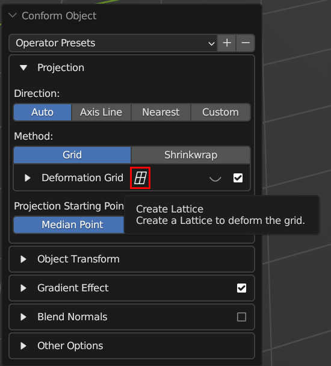
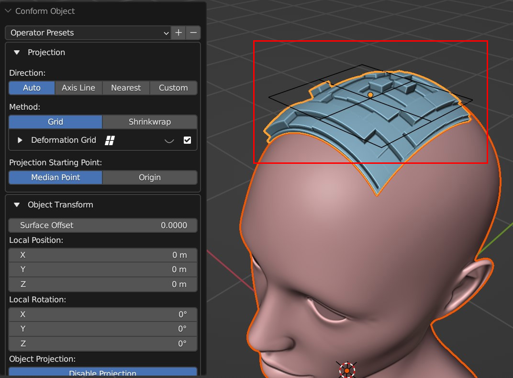
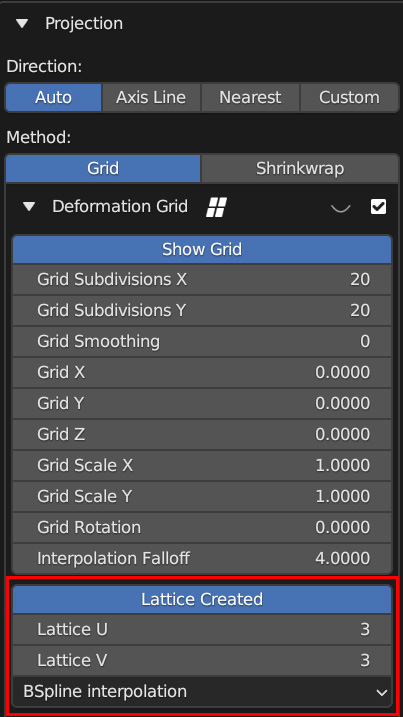
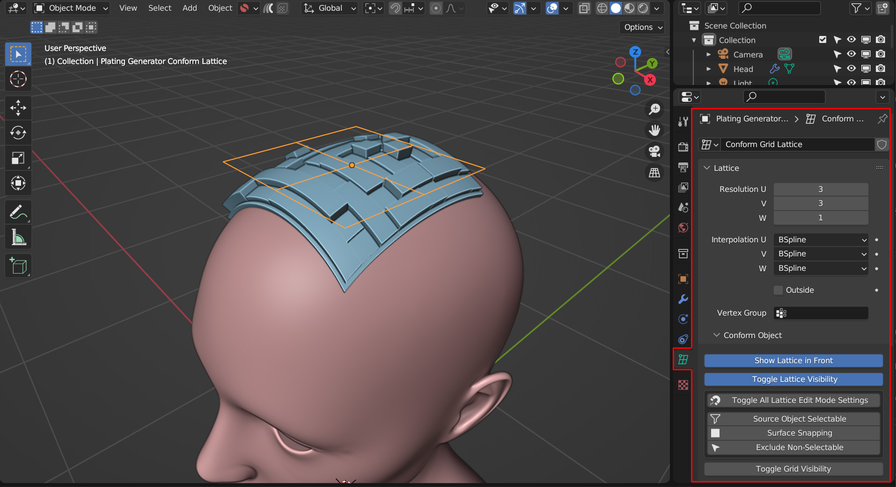
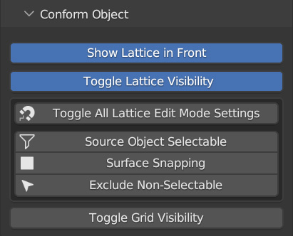
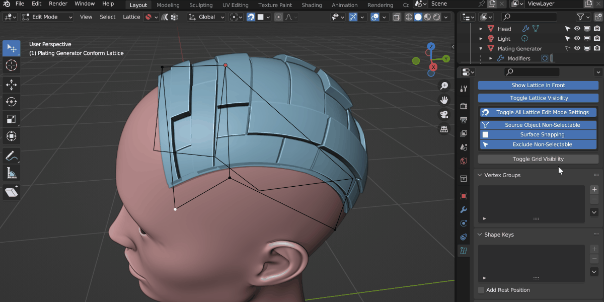
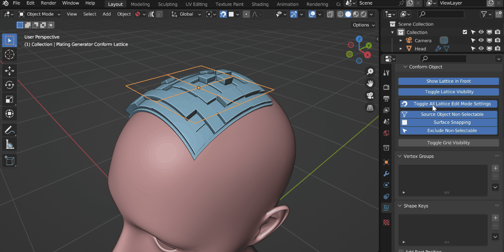
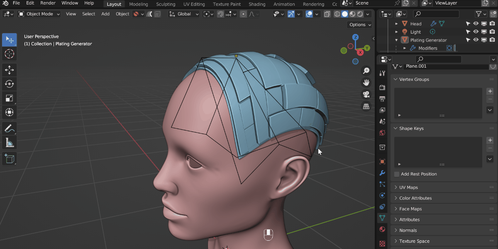

You can stretch an object around another object’s surface with a Lattice control object when you have ran Conform Object. The Lattice deforms the underlying Deformation when in Grid Mode, which allows you to push and pull the Source Object along the Target Object’s surface. Here is the how-to video:
Warning
Using the Lattice takes some practice and is not a one-click solution. Do Contact Us if you are having issues.
Select the Source Object and the Target Object and run Conform Object as usual.
To activate the Lattice, in the left side options menu that appears, expand the Projection Section and click the Lattice icon next next to the Deformation Grid section:

This will create and attach a Lattice object to the hidden deformation grid. The Lattice can be a little hard to see but appears at the same point as the Source Object:

You can optionally choose to change the number of points on the Lattice, although this can be done later under the Lattice Data Properties panel. It is suggested to keep the lattice points relatively low:

Once the Lattice is created, select it and go to the Lattice Data Properties tab on the right hand side of the application:

As well at the standard Lattice options for controlling the number of points and interpolation, there should be an additional “Conform Object” section. These contain options for controlling Blender that may be useful whilst editing the Lattice:

Show Lattice in Front: By default the Lattice Object is displayed in front of all other objects in the viewport for editing purposes. You can switch this off when you no longer need to see the lattice at all times.
Toggle Lattice Visibility: You can hide the lattice completely using this option.
Toggle All Lattice Edit Mode Settings: This switches on or off several options in Blender that may be useful when editing the Lattice control points. You can use this button to switch on/off all these options at once or control them individually using the buttons below it:
Source Object Selectable/Non-Selectable: This stops the Source Object being selectable, so that it does not interfere with the lattice when you are moving lattice points, especially when snapping points to the surface.
Surface Snapping: This button switches on/off surface snapping when moving control points, which is helping when you want to align the deformation with the Target Object surface.
Exclude Non-Selectable: This button will exclude Non-Selectable objects from surface snapping, so the Source Object does not interfere when trying to snap points to the surface of the Target Object.
Tip
Remember to disable these options again when you have finished editing the Lattice.
Toggle Grid Visibility: This unhides the grid which is useful when you want to visualize how the lattice is affecting the deformation grid:

By toggling grid visibility, you can see how the grid is being affected by the lattice.
Tip
Please note these are only optional settings and you may wish to experiment with moving the lattice control points without snapping enabled.
To edit the lattice, select it and press Tab to enter edit mode. You may wish to switch Blender’s selection mode to Tweak so you can quickly click and drag points:

You can now click and drag the points of the lattice to deform the underlying projection along the surface object.
Re-running Conform Object with your existing Lattice
Once you have edited the lattice, you may wish to re-run Conform Object to change some settings, such as increasing Grid Smoothing if the object appears too distorted. By default this will delete your lattice. To keep your Lattice deformation, you can do the following:
Select the Source Object.
Press shift and select the Lattice Object as well.
Finally, press shift again and select the Target Object last.
Re-Run the Conform Object operation.

Because you have also selected the Lattice, the add-on recognises this, runs Conform Object again and uses the Lattice object for deforming the projection grid.